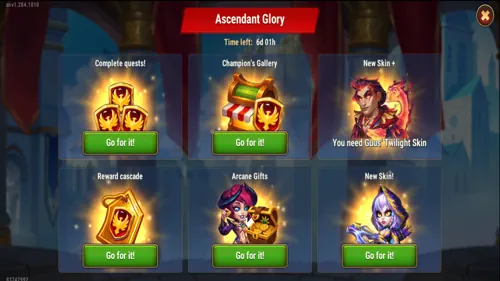

Ascendant Glory is not a normal resource event with a skin placed on top. It is a seven-day decision: how far are you truly willing to build the featured Hero? This season that Hero is Guus, the reward currency is Ascension Crests, and the prize that creates all the excitement is his Twilight Skin+.
My advice is to resist the urge to click every red notification. The event begins on Thursday and ends on Wednesday, which gives us one complete Guild VS cycle. That means nearly every expensive mission has a better day. When you line them up correctly, the same Rune Stone, Chaos Core, Titan Potion, or artifact fragment can advance Ascendant Glory and score for your guild at the same time.

My Short Version
If you do not own Guus, this event can solve a problem that campaign farming and normal shops cannot solve: access to his Soul Stones. Aim for at least four evolution stars, then use an Evolution Booster later for the fifth and sixth stars. If Guus is already a main-team Hero, reserve enough Ascension Crests for the Twilight Skin path. If he is not, do not let the new Skin+ consume resources your account needs more urgently.
Ascendant Glory Guides


 Champion's Gallery
Champion's GalleryWhat Each Event Really Does
Rising Legend
The daily engine. VIP Points, Chaos Cores, Summoning Circle summons, Fairy Dust, and Realm bosses reset every day, while Hydra and Arena chains are cumulative. Missing a reset means losing potential milestones forever.
Trial of Legends
The account-resource test. Its cumulative chains ask for Emeralds, Guild Activity, Rune Stones, Expeditions, Titan Potions, and Heroic Chests. There is no reason to rush these on Thursday when a better Guild VS day is coming.
Spark of Glory
The featured-Hero path. It rewards Guus rank, glyph, Gift of the Elements, and artifact upgrades, then pays extra Ascension Crests for completing missions in the other two events. This is where planning becomes progression.
Everything on the Ascendant Glory Screen
The event hub separates earning from spending. Complete Quests opens the three mission branches; Champion's Gallery is the Crest shop; New Skin+ contains the featured upgrade path; and the Reward Cascade, Arcane Gifts, and New Skin tiles hold additional event offers or rewards. Check every tile before spending because the Skin+ requires its base skin first.

Thursday-to-Wednesday Guild VS Calendar
This calendar is the heart of my strategy. The event day is shown first, followed by the exact Guild VS actions that overlap with Ascendant Glory.
| Event Day | Guild VS Theme | Best Ascendant Glory Actions | My Advice |
|---|---|---|---|
| Day 1 - Thursday | Rune Mastery | Spend Rune Stones and Rune Spheres; upgrade Guus glyphs; open Heroic Chests; fight Arena; gain Hero Power. | This is the opening burst. Runic Might and Awakened Glyphs belong here. |
| Day 2 - Friday | Hero Training | Summoning Circle summons, Fairy Dust, Expeditions, Guus equipment and rank promotions, Arena fights. | Friday has the widest useful overlap. Prepare summons and finished Expeditions before the event. |
| Day 3 - Saturday | Relics Upgrade | Spend Chaos Cores, use Titan Potions, defeat Realm bosses, awaken or evolve Guus artifacts, fight Arena. | Save the expensive artifact evolution steps and the largest Power Core push for Saturday. |
| Day 4 - Sunday | No Guild VS tasks | Daily logins, free claims, Hydra battles, low daily-reset tiers that cannot be carried forward. | Do not spend flexible stockpiles here. Sunday is the event's recovery day. |
| Day 5 - Monday | Titan Power | Spend Sparks of Power, open Heroic Chests, defeat Realm bosses, fight Arena. | Gift of the Elements has one clearly superior home: Monday. |
| Day 6 - Tuesday | Hero Skins | Use Titan Potions, start Expeditions, spend Hero artifact fragments, defeat Realm bosses, fight Arena. | Finish cumulative Titan Potion and Expedition goals here if Saturday and Friday were not enough. |
| Day 7 - Wednesday | Hero Gear | Spend Fairy Dust, equip Guus items, spend Hero artifact fragments, and generate Guild Activity by spending Energy. | Wednesday is the clean final push. Leave enough resources to finish milestones without panic spending. |
Guild VS matches are based on the mission list in Guild VS. A similar action is not automatically an exact match: for example, Monday's “Open a Summoning Sphere” is different from Friday's “Complete a summon in the Summoning Circle.”
The 90,000-Crest Decision
The new structure makes the base Twilight Skin obtainable through the event path by using 90,000 Ascension Crests. Only after securing the base skin can you move toward Twilight Skin+. That sounds generous, and for a real Guus team it is. But it also creates the event's most dangerous temptation: treating every Crest as if it must go into the Skin+ path.
My rule is simple. If Guus is central to your Arena, Grand Arena, or Guild team, the Skin+ deserves serious consideration because it improves his Critical Hit Chance and helps Honkageddon trigger more reliably. If Guus is sitting outside your main teams, the same Crests may build more account value through Soul Stones, Relic Shards, and Skin Stones. The badge is new; your resource economy is still real.
Best Plan by Account Stage
New Player
Claim all seven logins, complete affordable daily tiers, and prioritize Guus Soul Stones in Champion's Gallery. Four evolution stars now, then Evolution Boosters later, is much more efficient than forcing expensive late milestones.
Guus Main
Reserve the 90,000-Crest base-skin path first, make Thursday your glyph day, Friday and Wednesday your rank days, Monday your Gift day, and Saturday your artifact-evolution day.
Advanced Account
Use the Rising and Trial meta-chains to multiply Spark of Glory rewards, then compare the Skin+ cost with Lian, Oya, Jhu, and Alvanor Relic Shards before spending the remaining Crests.
Do Not Chase Every Final Tier
Ascendant Glory is designed to make partial progress feel incomplete. Do not let that feeling decide for you. A 750,000 Rune Stone target, 200,000 Emerald target, 35,000 VIP target, or 100 Heroic Chest target is not a recommendation. It is a ceiling. Stop when the next reward costs more than it improves your account.
Ascendant Glory Final Checklist
- Save Rune Stones and Rune Spheres for Thursday.
- Use Friday for summons, Expeditions, Fairy Dust, Guus gear, and Arena.
- Use Saturday for Chaos Cores, artifact evolution, Titan Potions, and Realm bosses.
- Avoid major flexible spending on Sunday.
- Spend Sparks of Power on Monday and finish Expeditions or Titan Potions on Tuesday.
- Keep Energy, Fairy Dust, Hero gear, and artifact fragments available for Wednesday.
- Read the Champion's Gallery priorities before spending Ascension Crests.
 Rising Legend Guide
Rising Legend Guide Trial of Legends Guide
Trial of Legends Guide Spark of Glory Guide
Spark of Glory Guide